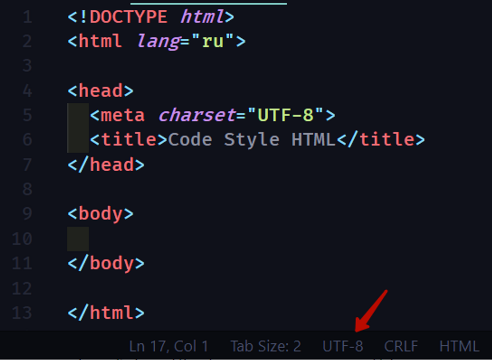

Назад
Правила кода HTML
-
!DOCTYPE
В начале страницы обязательно должен быть указан актуальный <!DOCTYPE html>, чтобы работать в режиме стандартов и последовательного рендеринга элементов в каждом доступном браузере. -
Атрибут локализации
Для элемента <html> в атрибуте lang должен указываться соответствующий язык документа. Это нужно для правильной работы синтеза речи, для переводчиков и поисковиков. -
Вырезка из спецификации HTML5
Разработчикам рекомендуется указывать атрибут языка в начале html файла, тем самым указывая на принадлежность языка документа. Это способствует инструментам генерации голоса определить то, какое произношение использовать, а инструментам перевода определить каким правилам придерживаться и так далее.
-
Кодировка символов документа
- Кодировка символов на странице всегда должна быть явно указана, чтобы обеспечить корректное отображение текста.
- Для Кириллицы нужно использовать UTF-8 кодировку, убедитесь что ваш документ так же имеет кодировку UTF-8
Пример:  -
Базовый синтаксис
- Теги и их атрибуты пишутся строчными буквами.
- Для значений атрибутов всегда используются двойные кавычки.
- Для отступов у вложенных элементов используется отступ в 2 пробела (или табуляция размером 2 пробела).
Пример: 
-
Закрывающие теги
- Закрывающий слеш у одиночных тегов (<img>, <br> и другие) не ставится.
- В остальных случаях , как <body</body>, <p</p> или <li></li>, обязателен закрывающий тег.
-
Подключение стилей
- Файл стилей подключается с помощью тега <link> внутри тега <head>.
- Обязательный атрибут rel - со значением stylesheet, иначе браузер не поймет что вы подключили.
- Атрибут type="text/css” писать не нужно в современной версии HTML
Пример: 
-
Атрибуты
- Атрибут класса у HTML-элементов пишется первым.
- Так проще распознать его, остальные атрибуты можно указывать в любом порядке, но желательно чтобы их порядок от элемента к элементу сохранялся.
- Для логических атрибутов, таких как checked, disabled, required и тд, значение не указывается
-
ALT - атрибут
- Обязательно нужно указывать атрибут alt у тега img, чтобы было чем его "заменить" если вдруг изображение не загрузилось
- Так же значение alt атрибута очень важно, для людей использующих вспомогательные технологии, например экранные читалки, они не видят интерфейс, а "читают" сайты с помощью экранного диктора. Программа зачитывает для них alt атрибут чтобы было понятно что на изображении.
-
Валидность HTML
- Документ должен проходить проверку на валидность HTML.
- Для проверки используется валидатор w3c - https://validator.w3.org/#validate_by_input